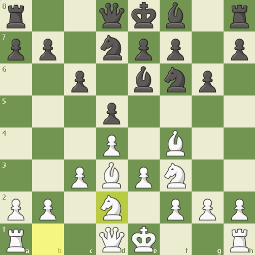

Como funciona a abertura Londres
iremos falar sobre uma abertura muito utilizada: Abertura Londrina. Esta abertura em si é muito bem feita, ela ganhou esse nome depois do torneio em londres em 1922. dizem que o Sistema Londres foi criado e desenvolvido a partir das ideias do enxadrista inglês Howard Staunton no século XIX. Mas em si, não existe um unico criador desta abertura pois ela foi criada e se popularizando por muitos anos, este homem apenas fez com que esta abertura tenha mais reconhecimento. O nome “Londres” veio porque essa abertura foi bastante usada em torneios realizados em London por jogadores ingleses
Como funciona a abertura londres
A abertura em si funciona com:
- D4
- Bf4
- E3
- Cf3
- C3
- BD3
- CD2
